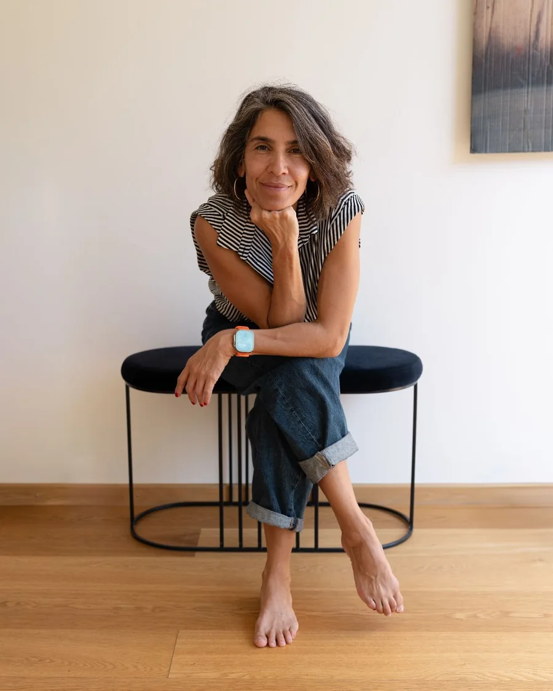
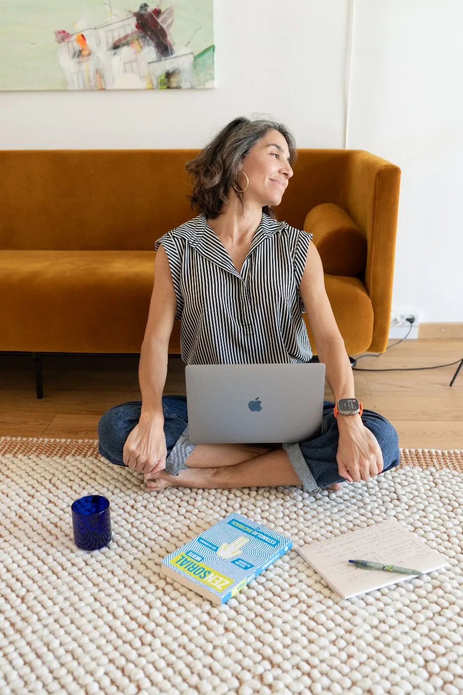
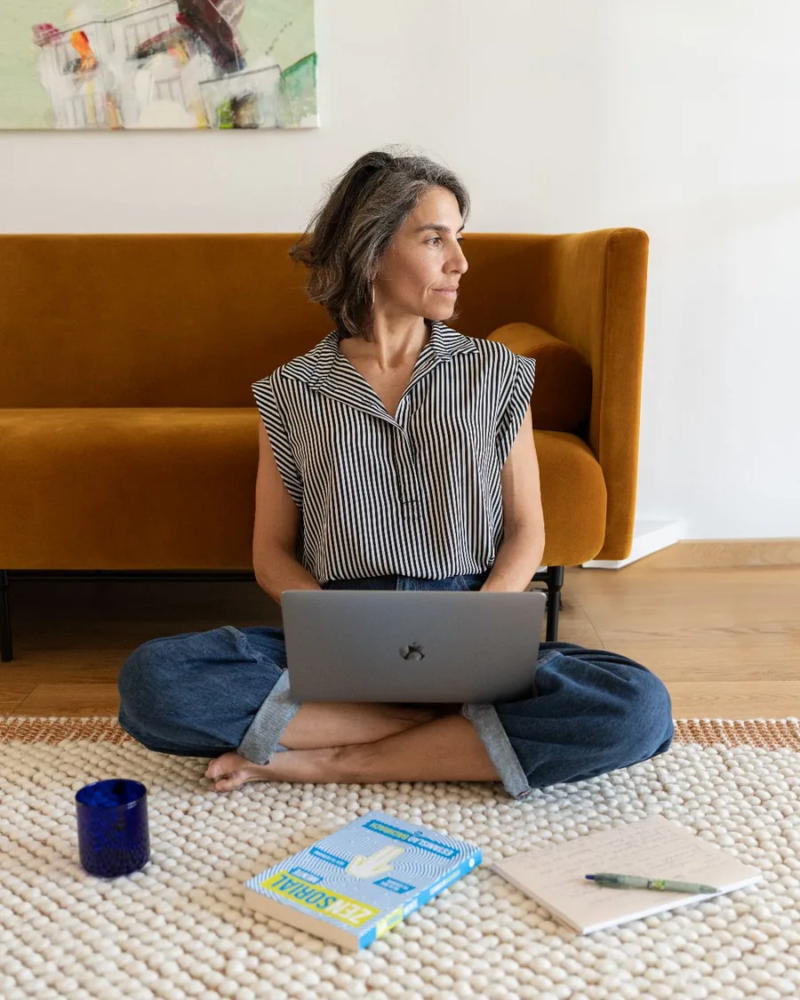
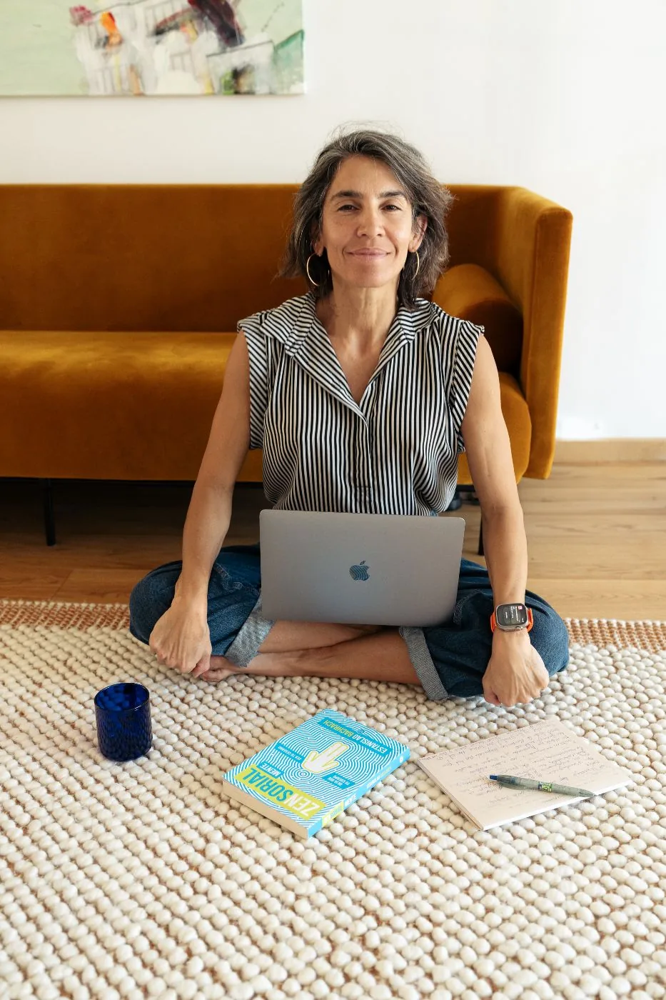

ALMAVIVA
Una forma más consciente de relacionarte contigo y con tu vida.
Unimos neurociencia, cuerpo y práctica para enseñarte una forma más humana de cuidar tu propia vida.

La vida cambia.
Nosotros también.
Y, aun así, muchas veces seguimos respondiendo desde patrones antiguos.
El cerebro aprende con la repetición.
El cuerpo, con la experiencia.
La identidad, con la práctica.
ALMAVIVA nace para ayudarte a convertir lo que comprendes en una nueva forma de vivir.
¿Qué es exactamente ALMAVIVA?

ALMAVIVA es un espacio de aprendizaje y práctica para comprender cómo te relacionas contigo y con lo que vives. Aquí el conocimiento no se queda en teoría. Se convierte en práctica, presencia y una manera más amable de relacionarte contigo.
Aquí aprendes a reconocer los patrones que aparecen en tu cuerpo, tus emociones, tus pensamientos y tus respuestas.
La neurociencia te ayuda a comprender cómo funcionan.
El cuerpo te permite reconocer cómo se expresan en ti.
La práctica te enseña a responder de una manera diferente.
No se trata de cambiar quién eres.
Se trata de ampliar tu capacidad de escucharte, cuidarte y elegir con mayor conciencia cómo quieres vivir.
Comprender. Reconectar. Entrenar.
Cuidar tu vida también se practica.
¿Cómo se trabaja en ALMAVIVA?
El corazón de ALMAVIVA se expresa en tres movimientos:
A través de este camino aprendes a comprender cómo funcionas por dentro, reconectar con tu cuerpo y entrenar nuevas formas de responder a la vida.
Los 5 pilares de la práctica
Comprender es el comienzo.
Para que ese conocimiento se convierta en una nueva forma de vivir, necesita pasar por un proceso.
En ALMAVIVA ese proceso se desarrolla a través de cinco pilares que se fortalecen de manera continua.
No son pasos rígidos ni un recorrido lineal.
Son capacidades que te ayudan a llevar la conciencia a tu vida cotidiana e integrar el cambio de forma sostenible.
Aprendes cómo se relacionan tu cerebro, tu cuerpo, tus emociones y tu sistema nervioso.
Comprender no es juzgarte.
Es empezar a mirarte con mayor claridad.
Aprendes a reconocer los patrones que aparecen en tus pensamientos, emociones, sensaciones corporales y formas de responder.
Lo que antes ocurría sin darte cuenta empieza a hacerse visible.
Clarificas cómo quieres relacionarte contigo, con los demás y con la vida.
El cambio se vuelve más sostenible cuando tiene sentido para ti.
Llevas la conciencia a la vida cotidiana mediante pequeñas acciones repetidas.
Es en la práctica donde el cerebro, el cuerpo y la identidad empiezan a aprender una nueva forma de responder.
Todo proceso de cambio tiene momentos de avance y de retroceso.
Integrar no significa hacerlo perfecto.
Significa aprender a volver, una y otra vez, con mayor conciencia.
Elige tu camino
ALMAVIVA no es un solo camino. Cada programa responde a un momento distinto. Elige el que haga sentido para ti ahora.
Un patrón concreto. 100% online.
Un acompañamiento individual y dirigido sobre un tema que hoy pesa, para desbloquear lo que se repite y avanzar con claridad.
Conocer Foco →Los cinco pilares. 100% online.
El método completo, en profundidad y con acompañamiento diario, para integrar ciencia, cuerpo y práctica y transformar tus patrones desde la raíz.
Conocer Intensivo →
Sesiones Individuales ALMAVIVA
Si sientes que necesitas pausar, ordenar lo que estás viviendo y mirarte con más honestidad, este espacio puede ser tu punto de partida.
Un acompañamiento diseñado para ayudarte a ganar claridad, aliviar lo que hoy pesa y reconectar con tus propios recursos desde una mirada integradora: mente, cuerpo, emoción y conciencia.
Comprender lo que se repite. Transformar cómo respondes.
Info sobre las sesiones →Soy Ana Carolina
Coach integrativa · Especialista en inteligencia emocional y neurociencia del bienestar
Con años de experiencia acompañando procesos de transformación, ayudo a personas a comprenderse mejor, reconocer sus patrones y entrenar nuevas formas de responder a la vida, integrando neurociencia aplicada, coaching, autoconocimiento y práctica corporal.
Mi historia me llevó a crear ALMAVIVA: un espacio donde la ciencia, el cuerpo y la práctica emocional se unen para acompañar una forma más amable, consciente y sostenida de compromiso con la propia vida.
Aquí el conocimiento no se queda en teoría. Se transforma en conciencia, práctica diaria y nuevas formas de habitarte, responder y volver a ti.
Porque el cambio real no ocurre desde la culpa ni la exigencia.
Ocurre cuando lo que comprendes empieza a integrarse en tu forma de vivir.
Volver a ti también se practica.
Saber más sobre mí →